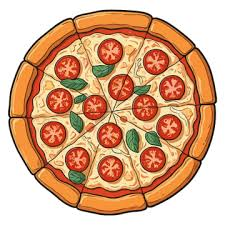

Home
Pizza

Descripcion
La pizza es un plato italiano, tradicionalmente una base de masa de pan redonda y plana, cubierta con salsa de tomate, queso mozzarella y otros ingredientes como aceitunas, albahaca o jamón, y horneada a alta temperatura, popularizada mundialmente por su versatilidad y sabor, con raíces en Nápoles y variantes infinitas.
Ingredientes
- 350 gr de harina de trigo (y un poco más para amasar)
- 180 ml de agua
- 1 cucharadita de sal
- ½ cucharadita de levadura seca
- 2 ½ cucharaditas de aceite de oliva Olivetto® sabor intenso
- 6 cucharadas de salsa pomodoro
- 1 taza de mozzarella de búfala
- 2 tomates chontos pequeños, cortados en tajadas
- ½ taza de aceitunas cortadas por la mitad
- 2 cucharadas de hojas de albahaca fresca
- Orégano, peperoncino y pimienta para servir
Steps
- Mezcla la harina y la sal en un recipiente grande y aparte disuelve la levadura en el agua. Haz un hueco en el centro de la harina, vierte el agua y empieza a mezclar del centro hacia afuera uniendo todos los ingredientes. Luego, agrega el aceite y pon la masa sobre un mesón enharinado; amasa durante 10 minutos o hasta que quede lisa y elástica.
- Déjala reposar una hora en el recipiente tapado con un limpión o todo un día en la nevera (tapado con papel film).
- Precalienta el horno a 450°f. / 232°C. Coloca una lata grande en la rejilla de abajo del horno o usa una piedra para pizza (si la tienes).
- Dale un golpe fuerte a la masa y ponla sobre el mesón enharinado. Extiende con la ayuda de un rodillo y usando las yemas de los dedos. Si se te pega a la mesa, agrega un poco más de harina.
- Cuando tengas un círculo de aproximadamente 35 cm, transfiere la masa a una tabla enharinada.
- Unta la superficie con la salsa pomodoro pero sin llegar a los bordes. Reparte el resto de los ingredientes, menos la albahaca. Pon la pizza sobre la lata o piedra que está en el horno y hornea durante 12 a 15 minutos o hasta que el queso se haya derretido y la pizza se dore.
- Agrega la albahaca ¡y listo! Tienes una deliciosa pizza italiana en tu mesa.